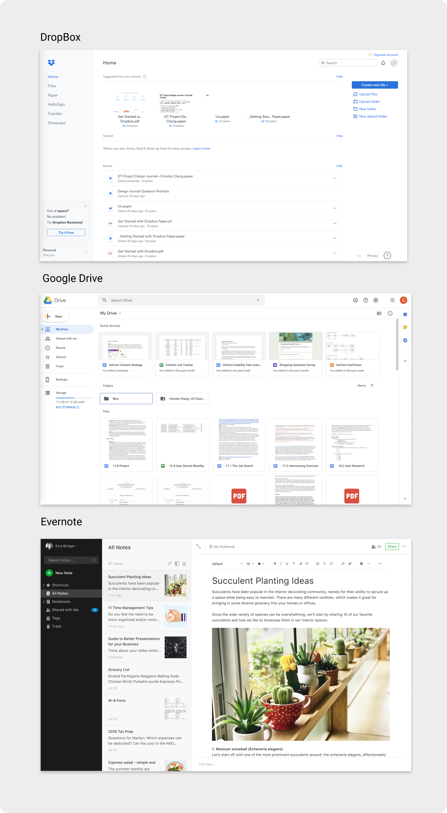
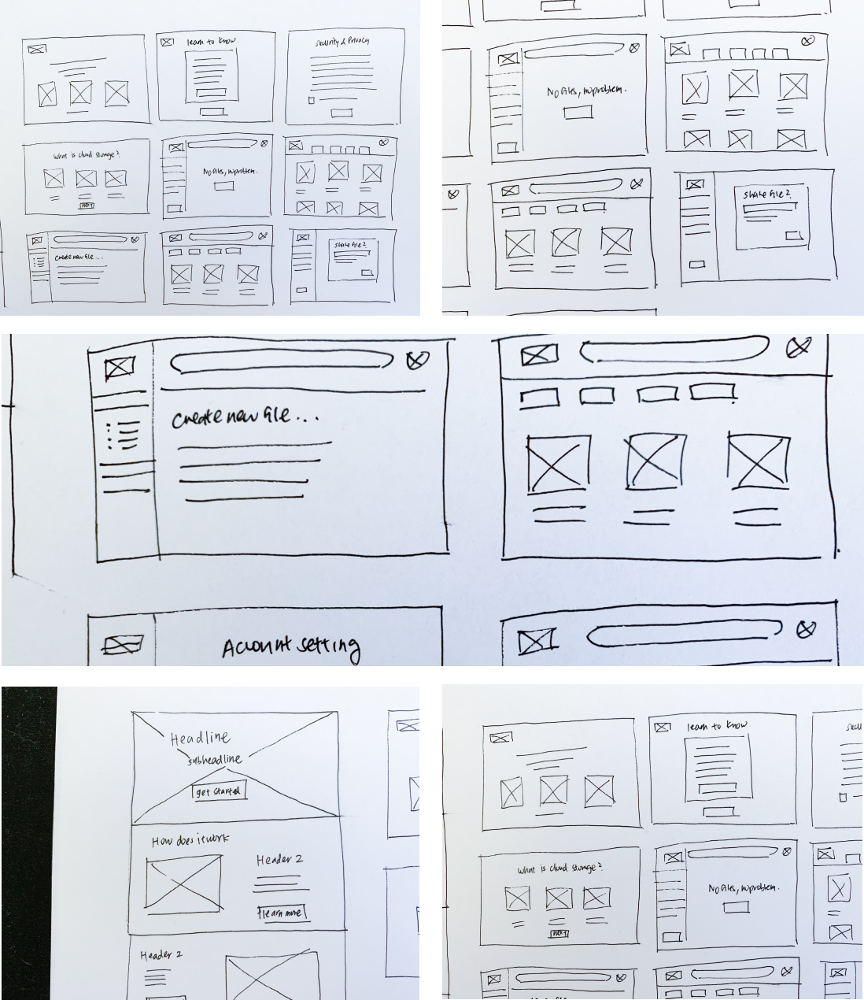
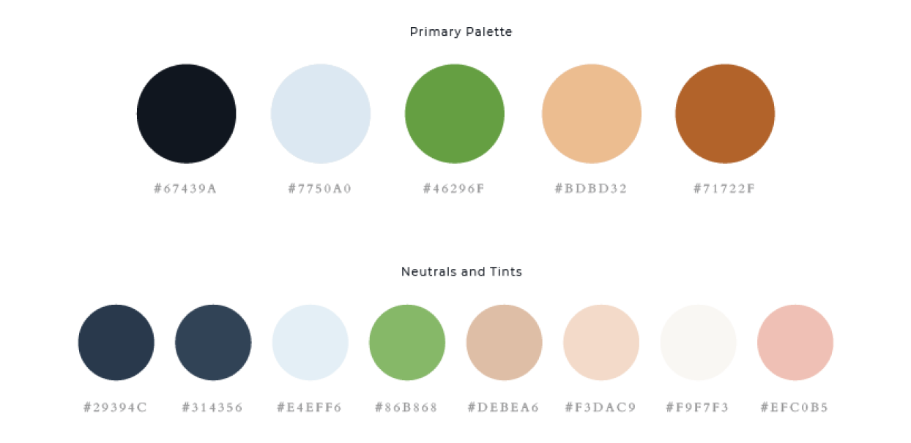
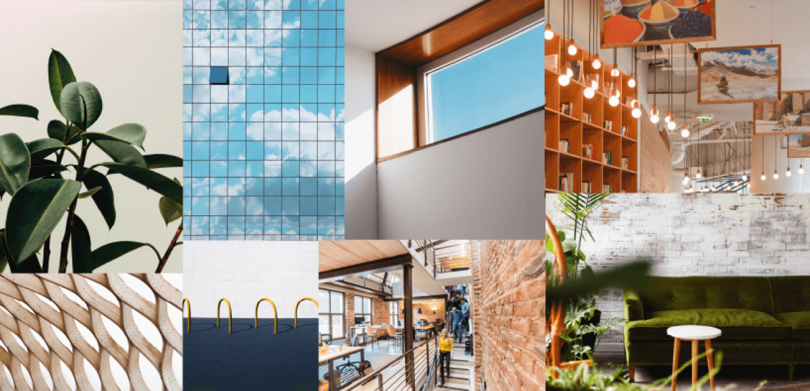
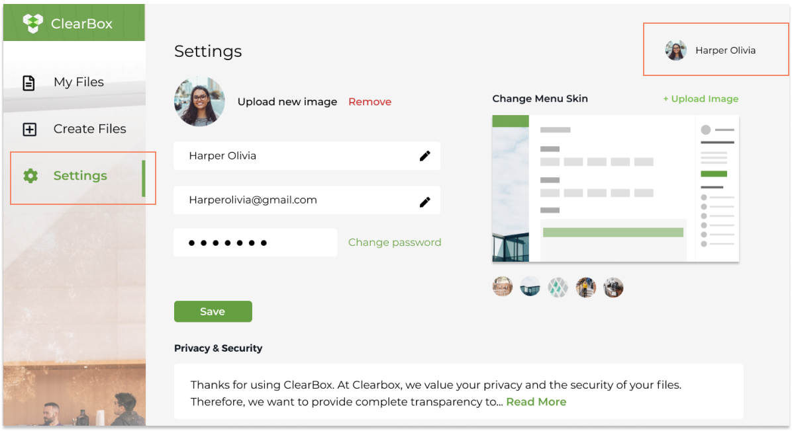
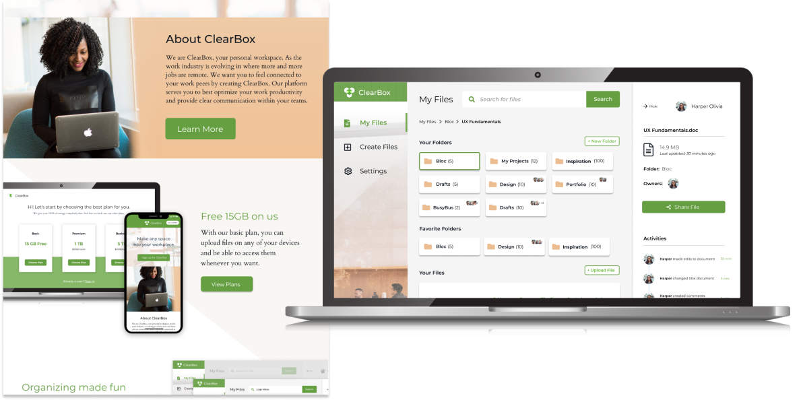

ClearBox
ClearBox serves as a platform for remote working professionals to better their working experience.
View ClearBox PrototypeClearBox serves as a platform for remote working professionals to better their working experience.
View ClearBox PrototypeThe Cloud storage service is still young in the marketplace, and can appeal to a range of audiences. ClearBox wants to serve as a platform for remote professionals to communicate with their colleagues. ClearBox understands the struggles of maintaining clear communication when working remote, and wants to provide tools to help remote professionals improve their work process.
UX Designer
Research, Information Architecture,
Interaction, Visual design & testing
Aug 2019 - Sept 2019
My client saw an opportunity to enter into the cloud storage market, and hired our agency to come up with a product that would be able to compete within this market space. The problem faced with making this product was finding a unique approach that would help our product stand out amongst big-name competitors like Google Drive, Dropbox, iCloud, Evernote, etc.
New Audience: I noticed a trend on job boards where more and more jobs were becoming remote. This would be my target audience.
Create, Organize, Share: I sent out user surveys to understand how users used cloud storage services. The results showed that I needed to build a platform where users can create, organize, and share.
Personalized Platform: Part of ClearBox’s values as a brand was to allow users to feel as if any space that they are in can be turned into their own personal workspace. Users are encouraged to customize their platform, so that the product feels catered to them.
At the start of the project, I wanted to learn more about my users and their involvement with cloud storage services. The results showed that a majority of my survey participants were full-time professionals between the ages of twenty to thirty. Google Drive was heavily favored as their product of choice. Participants preferred it because Google Drive was easy to use and worked seamlessly on multiple devices. After establishing my participant’s demographic, I wanted to look into how they were engaging with cloud storage services. Understanding their usage would help me create my user stories. Results showed that half of participants used it for personal reasons while 40% of users used it for work. This gave me the idea of creating a service that would serve as a project management platform.
While going over the project brief with the client, the client had features that they wanted to include in the product. They believed that these features were important for users to have. Therefore I created a separate section in my survey that tested out these features. Some of the features that the client wanted to include were the ability to create files, organize files, share files, and collaborate.


Apart from just looking at positive experiences that participants had with cloud storage services, I also wanted to look at the negatives. The biggest complaint from participants was not having enough storage space, and not enjoying monthly subscription plans. By researching on market competitors, I looked into creating plans that would provide users with more free storage space, and allowed users to sign up with annual subscriptions.
With the research and data collected, I began building user personas. These two personas would be identified as potential users.
Motivation
John’s job requires him to always be on the move. He is constantly traveling to his clients. He works with a team that helps him acquire research and information. John is heavily reliant on team collaboration features on his cloud storage service. He appreciates the ability to gain access to the latest editable documents, and access past versions of documents. He appreciates the ability to access documents offline when he’s flying.
Frustration
Security of files, having the most updated documents, difficulties in retrieving files.

Motivation
Since Meg moved away from her hometown, she wants to stay connected with her family members by sending photos and videos to one another. Most of the photos she takes is through her phone. Since there a lot of files being sent back and forth, she wants to make sure that all her files are organized by dates and folder names.
Frustration
File organization, running out of storage space, and needs the latest sync
I had an ample amount of research on potential users, and wanted to transition my attention to competitors in the market space. The three competitors I looked into was Google Drive, DropBox, and Evernote. These competitors would help me conceptualize the look of Clearbox.
Dropbox: Dropbox uses a minimal design to provide easy organization of folders and files. Dropbox’s seeks out creativIes by marketing their feature “DropBox Page”. It’s desktop version makes it very easy for users to adopt. However, of the three competitors, Dropbox has least attractive interface.
Google Drive: Google Drive provides a variety of tools for users to create, share, and send files/folders. It’s the only platform that syncs your email account. Google Drive’s audience is catered to small business owners and the everyday user. Of the three, it provides the most storage for users using the basic account (15GB). However, with so many functionalities, Google Drive can be hard to navigate around.
Evernote: Evernote is a note taking platform that is geared towards students. Their interface is filled with vector illustrations and is definitely geared to a younger audience. However, many of the features provided on Evernote are blocked unless users decide to upgrade their plan.
Having gained a better understanding of my users and marketspace. It was time to create user stories and user flows. User stories helped me prioritize the main features that would be included in the product. Then these user stories were converted into user flows through Figma. These flows would illustrate user paths in the product achieving high priority user story tasks.

By understanding my user flows, I started sketching out how the screens would look like. For each user flow, I did three to four different sketch iterations. This helped me find the best possible design layout. I would use Figma to digitally design these sketches into wireframes.
The wireframe sketches done above was an exploration of how the landing page would look like once the user completes sign up. In creating different iterations of the landing page, it helped me identify which layout create the best user flow. I also looked into exploring the onboarding process of a new user. I created sketches on how a path of a new user would look in comparison to an existing user. From here, I selected the sketches I wanted to move forward with and made digital renditions of them.
With the wireframe prototype, I had three in-person usability tests. Each user had four tasks that they needed to complete.
Task 1: Sign up for an account
Task 2: Creating a new piece of content
Task 3: Organize content
Task 4: Quick description of what each menu icon does
As I observed the partcipants, I saw that each user had no problem signing up for account. They were able to create a new file, however, the ellipsis next to the file name was a little confusing. They simply assumed a drag and drop into the folder would be the action used into adding a file into a folder. All menu tab items were accurately depicted (All Files, Add Documents, Collaborate, Upgrade Account, and Settings), but users were unsure the differences between the Collaboration tab and the All Files tab. One user wanted to see a stronger difference.
I took the feedback from my usability test and started to mock-up a high-fidelity wireframe of ClearBox. I added a sidebar to file creation that would show owners of the projects. Users in a shared project would be able to see recent activities done to the project. Collaborative projects also had the commenting section in order to enable better communication skills within teams.
I chose to go with a green as the accent color for ClearBox. I thought that it was a nice change from the usual blue software color, and that it could be distinguished within the marketplace.

The first steps in branding was identifying my target audience, which in this case were remote professionals. Having worked as a freelancer for five years, I understood that one of the key struggles I had was not feeling part of a whole. Oftentimes, details and direction of a project can get lost in translation. All I wanted was more clarity and transparency. I wanted those two words to reflect the values of this product. I liked the word “Clear” used in the product, for it could be interpreted in many ways. For some, it can mean having full transparency, which can eliminate points of cloudiness. I went with the name ClearBox because it represented the idea of creating your own personal workspace and being able to feel part of a whole.
From the word clear, I was able to branch out to other words that I helped me identify the brand. Some of these words included being transparent, reliable, adaptable, useful, motivational, etc. I used words created from my mind mapping execise to start sketching logo ideas out. I wanted a logo that showed transparency and layers. The logo needed to reflect the name of ClearBox, as well as, incorporates elements of a workspace in a minimalistic way. The logo would come off as professional, and so I created the logo primarily with geometric shapes.
The next step was establishing the mood board which would come to aid my decision for the color palette. This was personally my favorite part of branding. I searched for images that I thought best represented our product, yet still tied in with the words from the mind map. I drew inspiration from offices that had a lot of natural light, organic natural woods, and plants. I liked the mix of greenery, natural organic material, and industrial spaces all merged together. I used the eye picker to select certain colors that popped out to me. The main accent color that I chose for ClearBox was a fresh green. I wanted to stay away from blue because it is often a color used in software products. I wanted to make the product visually unique. It also served as a visual challenge for me to work with a color which can be seen as opposite from technology. However, green often reflects growth, and I believe that is what ClearBox is. It's a platform built to serve a new incoming line of working professionals.
The idea behind the first draft of the high fidelity mock-up was to incorporate stock photo images of work spaces and young working professionals. As stated above in the branding, I used green as an accent color, and incorporated warmer/neutral tones to help balance out the whitespace on the screens. As I added this style throughout the rest of the product, I wanted to do a quick preference testing to see how users felt on some particular screens that I was curious about. I tested out two different color variations, layout, and button placement.
What color do you prefer? 83% of users chose the second design.


Where do you prefer button placement? 84% of users chose the first design.


What layout do you prefer? 67% of users chose the first design.


From the preference test, there was an overwhelming number of users that prefered the dark blue color theme for the dashboard. This would be a huge change in look from the first high-fidelity mock-up and the second. I also made some changes to some of the onboarding screens that were tested out.
I decided to do a second round of testing in order to see if the changes done from my preference testing would change the opinions of these new users. The results of the second usability testing would drastically change the look of my design. A number of users had complained that the “My Files” tab and “Collaboration” tab were too similar in look and functionality to one another. The only difference the screen had was the ability to view notes and screen share for collaborative projects. Originally in my mind, I thought collaboration should be a separate tab in itself, because it was a highly sought out feature from my user surveys. However, the way I designed it out didn’t make it too different from “My Files”. Therefore, I decided to combine the “Collaborate” tab into the “My Files” tab. All files that are shared will be allowed the feature to share notes and screen share.
I decided to do a second round of testing in order to add the changes done from my preference testing. The results of this testing would lead to big changes from V2 to my final design look.
A number of users had complained that the “My Files” tab and “Collaboration” tab were too similar in look and functionality to one another.
The only key difference the screens had was the ability to view notes and screen share for collaborative projects. I originally thought collaboration should be a separate tab in itself because it was a highly sought out feature from my user surveys. However, it was such a minor difference of functionality between the two, so I decided to combine the “Collaborate” tab into the “My Files” tab. All files that are shared will be allowed the feature to share notes and screen share.
Settings was difficult to find.
Users didn’t seem to notice that the profile image would have a drop down to access settings. Since I had some extra real estate on my left menu bar, I decided to add a tab that featured “Settings”. This way users had two ways in accessing “Settings”.
Branding of the website was not aligned with the product.
The user said ClearBox didn’t quite match the look and feel of the website landing page. She wanted to see more clear/layered effects that would match the style of the logo. When this was brought to my attention, I looked into creating a more transparent platform for my users in which they could feel comfortable working in. I created a feature within settings that would allow users to customize their workspace. The side menu bar can be changed based on where ever the remote professional was at.
I believe that I identified a great target audience for the product. I was able to identify patterns in how more jobs are becoming remote. I used my observations as an advantage to finding my audience.
In considering future developments of the current product, I want to send out surveys targeting remote work professionals. From the surveys, I’m hoping to create more features that are geared towards my specific audience. I liked how I used my personal experiences as a freelancer to help my drive ClearBox’s branding. In the next steps of design, I’d like to place my focus in having the product be more malleable to the user.
I believe these goals listed above can be achieved through user research, ideation, prototyping, wireframing and usability testings.